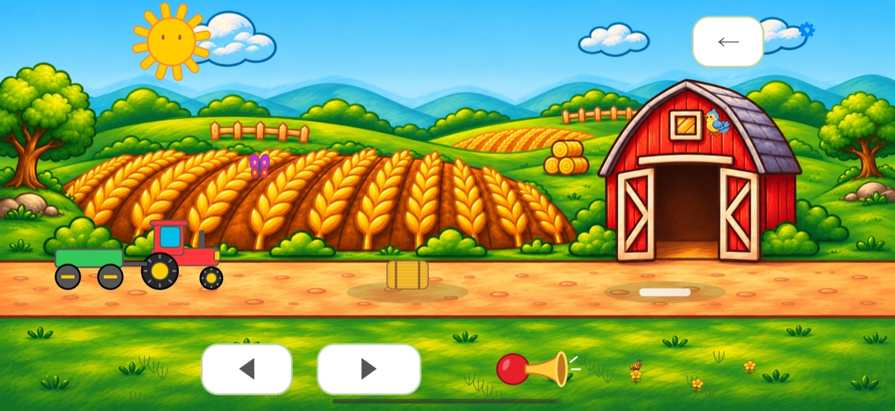
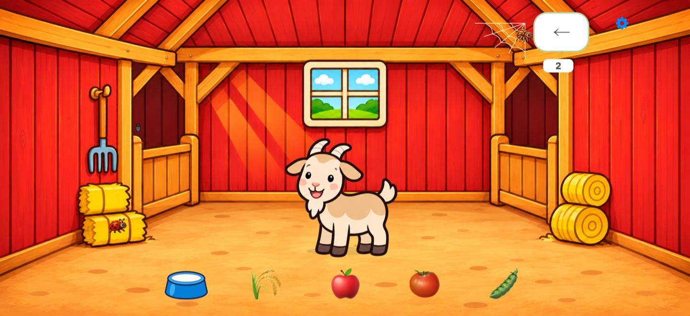
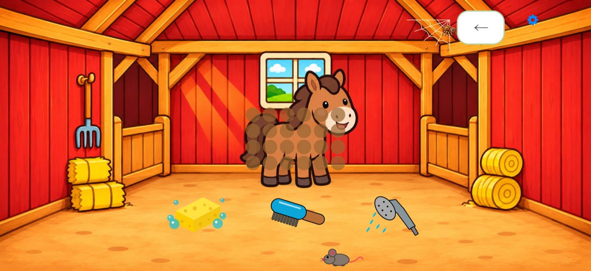

Drive the tractor
Drive across the field and take hay bales to the barn.
Ages 3–5 · iPhone and iPad
Help Farmer Tom with eleven activities on the farm. Every task is read aloud in English or Dutch. For children aged 3 to 5.

Farmer Tom could use a hand. Look after the animals, drive the tractor or help the ducklings reach the other bank. Pick a spot on the farm map or swipe to the east map for four more games.

Drive across the field and take hay bales to the barn.

Choose what each animal likes to eat, from hay for the cow to a bowl of milk for the cat.

Look after the animals with a sponge, brush or shower.

Listen to an animal sound and tap the animal it belongs to.

Plant seeds, water them and harvest vegetables. Give the bunny a carrot.

Find the white or brown eggs and hear them counted aloud.

Move the basket under falling apples and water the tree.

Bring each baby animal to its parent.

Find the bunny in one of five hiding places.

Place the planks and hammer in the nails so the lambs can come through.

Place three stepping stones and make a route with a diagonal step for the ducklings.
All games are ready to play. Every task is read aloud in the selected language.
The games work offline and contain no ads, accounts, subscriptions or in-app purchases.
Adjust the language, spoken prompts, game sounds, music and animal sounds separately in the parent area.
The app stores language and sound preferences and progress for some games locally.